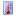
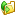

|
Grid Overlay - Toggles the
latitude/longitude grid with labels. |
|
Coast Overlay - Toggles the
coast lines and land mask (based on GSHHS polygon data). |
|
Political Overlay - Toggles the
international and state borders (based on WDBII data). |
 |
Zoom In x2 - Magnifies the data
view by two times. |
 |
Zoom Out x2 - Shrinks the data
view by two times. |
 |
Zoom to Selected - Magnifies the
data view on a certain area. Click and drag the mouse over the
data view to select a zoom rectangle. |
 |
Pan View Area - Pans the data
view. Click and drag on the data view to show nearby
areas. |
|
Show Region - Zooms the data
view to a region of interest by geographic region name. Click
the tool bar button and select from the drop-down menu of
names. |
 |
Reset View - Resets the data
view to show the full dataset region. |
|
Change Palette - Changes the
color scale palette. Select from many different color palettes
and the data view changes accordingly. When the dataset is
changed, the client saves the user's selected palette and
restores it when viewing the same dataset again. |
|  |
Change Scale - Changes the color
scale minimum and maximum data values. Select the new color
scale range and press Enter or click Apply, and the data view
changes accordingly. As with the palette, the color scale range
is saved and restored again when switching between
datasets. |
|  |
Download Data - Downloads the
data file for the current data view. See Accessing data files for details on
the data format. |
|
Show OPeNDAP - Shows the OPeNDAP
form for the current data view. See Accessing data files for details on
OPeNDAP. |